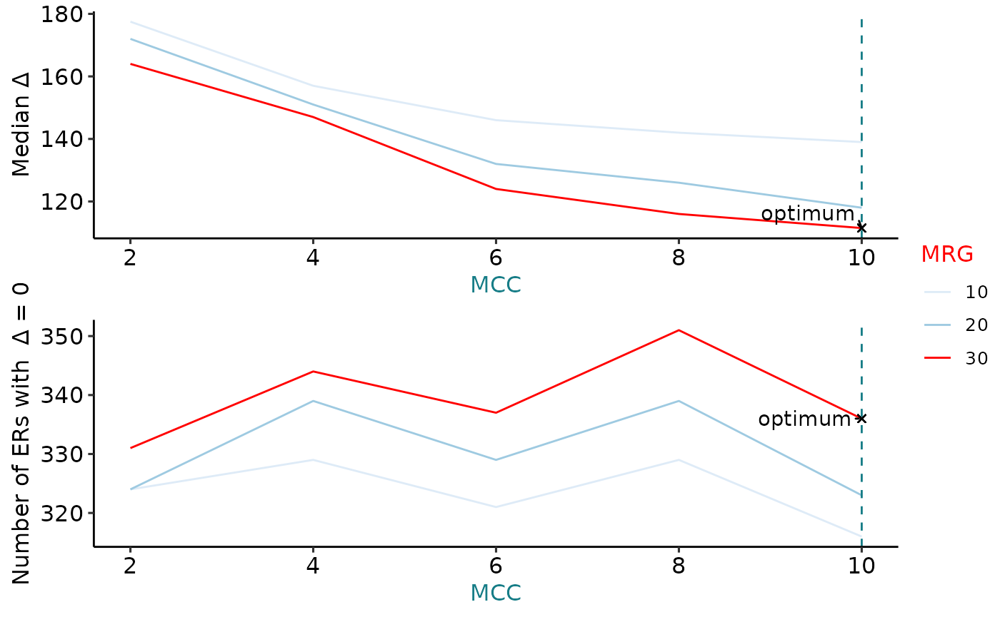

vignettes/ODERflow.Rmd
ODERflow.RmdODER
R is an open-source statistical environment which can be easily modified to enhance its functionality via packages. ODER is a R package available via the Bioconductor repository for packages. R can be installed on any operating system from CRAN after which you can install ODER by using the following commands in your R session:
if (!requireNamespace("BiocManager", quietly = TRUE)) {
install.packages("BiocManager")
}
BiocManager::install("ODER")
## Check that you have a valid Bioconductor installation
BiocManager::valid()The expected input of ODER is coverage in the form of BigWig files.
ODER is based on many other packages and in particular in those that have implemented the infrastructure needed for dealing with RNA-seq data. The GenomicRanges package is heavily used in ODER while other packages like SummarizedExperiment and GenomeInfoDb also being featured so previous experience with these packages will help in the comprehension and use of ODER.
If you are asking yourself the question “Where do I start using Bioconductor?” you might be interested in this blog post. If you find the structure of a SummarizedExperiment unclear, you might consider checking out this manual.
As package developers, we try to explain clearly how to use our packages and in which order to use the functions. But R and Bioconductor have a steep learning curve so it is critical to learn where to ask for help. The blog post quoted above mentions some but we would like to highlight the Bioconductor support site as the main resource for getting help: remember to use the ODER tag and check the older posts. Other alternatives are available such as creating GitHub issues and tweeting. However, please note that if you want to receive help you should adhere to the posting guidelines. It is particularly critical that you provide a small reproducible example and your session information so package developers can track down the source of the error.
ODER
We hope that ODER will be useful for your research. Please use the following information to cite the package and the overall approach. Thank you!
## Citation info
# citation("ODER")ODER
ODER consists of 4 main functions, some of which consist of several smaller helper functions. These functions are
BiocManager::install("eolagbaju/ODER")This is a basic example to show how you can use ODER, for reproducibility everything used in this vignette can either be found online or is contained in ODER. First, we need to download the data and information needed to run ODER:
library("ODER")
library("magrittr")
# loading in RNA seq data to run ODER on
gtex_metadata <- recount::all_metadata("gtex")
#> Setting options('download.file.method.GEOquery'='auto')
#> Setting options('GEOquery.inmemory.gpl'=FALSE)
#> 2021-08-24 18:01:36 downloading the metadata to /tmp/RtmpSKoSeR/metadata_clean_gtex.Rdata
gtex_metadata <- gtex_metadata %>%
as.data.frame() %>%
dplyr::filter(project == "SRP012682")
url <- recount::download_study(
project = "SRP012682",
type = "samples",
download = FALSE
)
# .file_cache is an internal function to download a bigwig file from a link if the file has been downloaded recently, it will be retrieved from a cache
bw_path <- ODER:::.file_cache(url[1])
gtf_url <- "http://ftp.ensembl.org/pub/release-103/gtf/homo_sapiens/Homo_sapiens.GRCh38.103.chr.gtf.gz"
gtf_path <- ODER:::.file_cache(gtf_url)To get the optimum set of ERs from a BigWig file we can use the ODER function, for stranded BigWigs there is the ODER_strand function:
# Getting the optimally defined ERs by finding the combination of Mean Coverage Cut-off and Max Region Gap that gives the smallest exon delta
# MCC - Mean Cutoff Coverage - this is the minimum read depth that a read needs to have to be considered expressed
# MRG - Max Region Gap - this is the maximum number of base pairs between reads that fall below the MCC before you would not include it as part of the expressed region
opt_ers <- ODER(
bw_paths = bw_path, auc_raw = gtex_metadata[["auc"]][1],
auc_target = 40e6 * 100, chrs = c("chr21", "chr22"),
genome = "hg38", mccs = c(2, 4, 6, 8, 10), mrgs = c(10, 20, 30),
gtf = gtf_path, ucsc_chr = TRUE, ignore.strand = TRUE,
exons_no_overlap = NULL, bw_chr = "chr"
)
#> Loading required package: BiocGenerics
#> Loading required package: parallel
#>
#> Attaching package: 'BiocGenerics'
#> The following objects are masked from 'package:parallel':
#>
#> clusterApply, clusterApplyLB, clusterCall, clusterEvalQ,
#> clusterExport, clusterMap, parApply, parCapply, parLapply,
#> parLapplyLB, parRapply, parSapply, parSapplyLB
#> The following objects are masked from 'package:stats':
#>
#> IQR, mad, sd, var, xtabs
#> The following objects are masked from 'package:base':
#>
#> anyDuplicated, append, as.data.frame, basename, cbind, colnames,
#> dirname, do.call, duplicated, eval, evalq, Filter, Find, get, grep,
#> grepl, intersect, is.unsorted, lapply, Map, mapply, match, mget,
#> order, paste, pmax, pmax.int, pmin, pmin.int, Position, rank,
#> rbind, Reduce, rownames, sapply, setdiff, sort, table, tapply,
#> union, unique, unsplit, which.max, which.min
#> Loading required package: S4Vectors
#> Loading required package: stats4
#>
#> Attaching package: 'S4Vectors'
#> The following object is masked from 'package:base':
#>
#> expand.grid
#> [1] "2021-08-24 18:01:41 - Obtaining mean coverage across 1 samples"
#> [1] "2021-08-24 18:01:41 - chr21"
#> [1] "2021-08-24 18:01:42 - chr22"
#> [1] "2021-08-24 18:01:43 - Generating ERs for chr21"
#> [1] "2021-08-24 18:01:49 - Generating ERs for chr22"
#> [1] "2021-08-24 18:01:54 - Loading in GTF..."
#> [1] "2021-08-24 18:02:37 - Obtaining non-overlapping exons"
#> [1] "2021-08-24 18:02:39 - Calculating delta for ERs..."
#> [1] "2021-08-24 18:02:42 - Obtaining optimal set of ERs..."
# for stranded bigwig files:
# bw_pos <- ODER:::.file_cache(url[58])
# bw_neg <- ODER:::.file_cache(url[84])
# opt_strand_ers <- ODER_strand(
# bw_pos = bw_plus, bw_neg = bw_minus,
# auc_raw_pos = gtex_metadata[["auc"]][58], auc_raw_neg = gtex_metadata[["auc"]][84],
# auc_target = 40e6 * 100, chrs = c("chr21", "chr22"),
# genome = "hg38", mccs = c(2, 4, 6, 8, 10), mrgs = c(10, 20, 30),
# gtf = gtf_path, ucsc_chr = TRUE, ignore.strand = FALSE, exons_no_overlap = NULL, bw_chr = "chr"
# )
opt_ers
#> $opt_ers
#> GRanges object with 14662 ranges and 0 metadata columns:
#> seqnames ranges strand
#> <Rle> <IRanges> <Rle>
#> [1] chr21 5032176-5032217 *
#> [2] chr21 5033408-5033425 *
#> [3] chr21 5034717-5034756 *
#> [4] chr21 5035188-5035189 *
#> [5] chr21 5036577-5036581 *
#> ... ... ... ...
#> [14658] chr22 50798779-50798835 *
#> [14659] chr22 50798884-50799149 *
#> [14660] chr22 50799209-50799284 *
#> [14661] chr22 50799669-50799744 *
#> [14662] chr22 50800460-50800587 *
#> -------
#> seqinfo: 2 sequences from an unspecified genome; no seqlengths
#>
#> $opt_mcc_mrg
#> [1] "mcc_10" "mrg_30"
#>
#> $deltas
#> # A tibble: 15 x 7
#> mcc mrg sum mean median n_eq_0 propor_eq_0
#> <dbl> <dbl> <int> <dbl> <dbl> <int> <dbl>
#> 1 2 10 2613404 929. 178. 324 0.115
#> 2 2 20 2347085 887. 172 324 0.122
#> 3 2 30 2136347 857. 164 331 0.133
#> 4 4 10 2314874 950. 157 329 0.135
#> 5 4 20 2067967 910. 151 339 0.149
#> 6 4 30 1878983 873. 147 344 0.160
#> 7 6 10 2084841 971. 146 321 0.149
#> 8 6 20 1790136 900. 132 329 0.165
#> 9 6 30 1553676 833. 124 337 0.181
#> 10 8 10 1929926 985. 142 329 0.168
#> 11 8 20 1651370 922. 126 339 0.189
#> 12 8 30 1417918 842. 116 351 0.209
#> 13 10 10 1771837 1009. 139 316 0.180
#> 14 10 20 1457726 911. 118 323 0.202
#> 15 10 30 1323807 876. 112. 336 0.222
# opt_strand_ersOnce we have the opt_ers, we can generate a plot to see how the various MCCs and MRGs would look. The median exon delta represents the overall accuracy of all ER definitions, whereas the number of ERs with exon delta equal to 0 indicates the extent to which ER definitions precisely match overlapping exon boundaries.
# visualise the spread of mccs and mrgs
plot_ers(opt_ers[["deltas"]], opt_ers[["opt_mcc_mrg"]])
To find the overlapping junctions and find the nearest expressed genes we can use annotatERs. The junctions used should be the same tissue type as the ERs from the BigWig passed into ODER, in this case we are looking at lung tissue data.
# annotating the optimally defined ers with overlapping junctions
annot_ers <- annotatERs(
opt_ers = opt_ers[["opt_ers"]], junc_data = lung_junc_21_22,
gtf_path = gtf_path, chrs_to_keep = c("21", "22"), ensembl = TRUE
)
#> [1] "2021-08-24 18:02:44 - Obtaining co-ordinates of annotated exons and junctions from gtf/gff3..."
#> [1] "2021-08-24 18:02:44 - Importing gtf/gff3 as a TxDb..."
#> Import genomic features from the file as a GRanges object ... OK
#> Prepare the 'metadata' data frame ... OK
#> Make the TxDb object ...
#> Warning in .get_cds_IDX(mcols0$type, mcols0$phase): The "phase" metadata column contains non-NA values for features of type
#> stop_codon. This information was ignored.
#> OK
#> [1] "2021-08-24 18:04:08 - Getting junction annotation using overlapping exons..."
#> [1] "2021-08-24 18:04:09 - Tidying junction annotation..."
#> [1] "2021-08-24 18:04:09 - Deriving junction categories..."
#> [1] "2021-08-24 18:04:10 - done!"
#> [1] "2021-08-24 18:04:10 - Finding junctions overlapping ers..."
#> [1] "2021-08-24 18:04:58 - Generating a genomic state..."
#> Import genomic features from the file as a GRanges object ... OK
#> Prepare the 'metadata' data frame ... OK
#> Make the TxDb object ...
#> Warning in .get_cds_IDX(mcols0$type, mcols0$phase): The "phase" metadata column contains non-NA values for features of type
#> stop_codon. This information was ignored.
#> OK
#> Warning in .get_cds_IDX(mcols0$type, mcols0$phase): The "phase" metadata column contains non-NA values for features of type
#> stop_codon. This information was ignored.
#> extendedMapSeqlevels: sequence names mapped from NCBI to UCSC for species homo_sapiens
#> 'select()' returned 1:1 mapping between keys and columns
#> [1] "2021-08-24 18:06:56 - Annotating the Expressed regions..."
#> 2021-08-24 18:06:56 annotateRegions: counting
#> 2021-08-24 18:06:57 annotateRegions: annotating
#> [1] "2021-08-24 18:07:36 - done!"
# To check the types of tissue you can filter for:
# print(tissue_options)
annot_ers <- add_expressed_genes(tissue = "lung", gtf_path = gtf_path, annot_ers = annot_ers)We can use refine_ers to modify the starts and ends of the expressed regions by using refine_ers on the annotated regions.
# modify the starts and ends of the ERs using the junction data
refined_ers <- refine_ERs(annot_ers)
#> [1] "2021-08-24 18:08:49 - Refining the Expressed regions..."
refined_ers
#> GRanges object with 2 ranges and 7 metadata columns:
#> seqnames ranges strand | grl genes
#> <Rle> <IRanges> <Rle> | <GRangesList> <CharacterList>
#> [1] chr21 5093713-5093743 * | chr21:5093712-5093744:+ ENSG00000280071
#> [2] chr21 5162182-5162248 * | chr21:5162249-5162287:+ ENSG00000280433
#> annotation og_index gene_source nearest_gene_v94_name
#> <character> <integer> <character> <character>
#> [1] intron 15 nearest gtf genes ENSG00000280071
#> [2] intron 71 nearest gtf genes ENSG00000280433
#> nearest_expressed_gene_v94_name
#> <character>
#> [1] ENSG00000264462
#> [2] ENSG00000264462
#> -------
#> seqinfo: 2 sequences from an unspecified genome; no seqlengthsGenerate an ER count matrix with get_count_matrix, if cols is left blank the function will auto-generate colData for the Ranged Summarized Experiment output.
# Generate a count matrix for the annotated ERs
run <- gtex_metadata[["run"]][[1]]
col_info <- as.data.frame(run)
er_count_matrix <- get_count_matrix(bw_paths = bw_path, annot_ers = annot_ers, cols = col_info)
#> The latest megadepth version is 1.1.0c
#> megadepth has been installed to /github/home/bin
#> Warning in is.na(.x): is.na() applied to non-(list or vector) of type 'S4'
er_count_matrix
#> class: RangedSummarizedExperiment
#> dim: 6641 1
#> metadata(0):
#> assays(1): ''
#> rownames: NULL
#> rowData names(0):
#> colnames: NULL
#> colData names(1): runIn this section, we will run through the smaller functions that make up each of the big wrapper functions, ODER and annotatER, in detail. This can be helpful for users that want to understand or modify the intermediates of the ODER pipeline or are only interested in executing a specific step. If you want to follow along and run this code in your R session, make sure you have followed the instructions in the section setup.
First we need to load in the coverage of the RNA seq data from a BigWig file using get_coverage, the output of this will be a GRanges object which we will generate all the possible ERs from the various MCCs and MRGs that you want to test by passing the GRanges into get_ers.
# getting the mean coverage of the expressed regions
coverage <- get_coverage(
bw_paths = bw_path,
auc_raw = gtex_metadata[["auc"]][1],
auc_target = 40e6 * 100, # target 40 million coverage with 100 bp length reads
chrs = c("chr21", "chr22")
) # defaults to chr1-22, chrX, chrY, chrM if chrs = ""
#> [1] "2021-08-24 18:11:40 - Obtaining mean coverage across 1 samples"
#> [1] "2021-08-24 18:11:40 - chr21"
#> [1] "2021-08-24 18:11:40 - chr22"
ers <- get_ers(coverage = coverage, mccs = c(2, 4, 6, 8, 10), mrgs = c(10, 20, 30))
#> [1] "2021-08-24 18:11:41 - Generating ERs for chr21"
#> [1] "2021-08-24 18:11:42 - Generating ERs for chr22"
ers
#> $mcc_2
#> $mcc_2$mrg_10
#> GRanges object with 36744 ranges and 0 metadata columns:
#> seqnames ranges strand
#> <Rle> <IRanges> <Rle>
#> [1] chr21 5017261-5017336 *
#> [2] chr21 5019250-5019325 *
#> [3] chr21 5019449-5019524 *
#> [4] chr21 5019756-5019790 *
#> [5] chr21 5026314-5026389 *
#> ... ... ... ...
#> [36740] chr22 50802323-50802429 *
#> [36741] chr22 50802458-50802533 *
#> [36742] chr22 50802557-50802774 *
#> [36743] chr22 50803640-50803715 *
#> [36744] chr22 50804299-50804331 *
#> -------
#> seqinfo: 2 sequences from an unspecified genome; no seqlengths
#>
#> $mcc_2$mrg_20
#> GRanges object with 34224 ranges and 0 metadata columns:
#> seqnames ranges strand
#> <Rle> <IRanges> <Rle>
#> [1] chr21 5017261-5017336 *
#> [2] chr21 5019250-5019325 *
#> [3] chr21 5019449-5019524 *
#> [4] chr21 5019756-5019790 *
#> [5] chr21 5026314-5026389 *
#> ... ... ... ...
#> [34220] chr22 50802323-50802429 *
#> [34221] chr22 50802458-50802533 *
#> [34222] chr22 50802557-50802774 *
#> [34223] chr22 50803640-50803715 *
#> [34224] chr22 50804299-50804331 *
#> -------
#> seqinfo: 2 sequences from an unspecified genome; no seqlengths
#>
#> $mcc_2$mrg_30
#> GRanges object with 32059 ranges and 0 metadata columns:
#> seqnames ranges strand
#> <Rle> <IRanges> <Rle>
#> [1] chr21 5017261-5017336 *
#> [2] chr21 5019250-5019325 *
#> [3] chr21 5019449-5019524 *
#> [4] chr21 5019756-5019790 *
#> [5] chr21 5026314-5026389 *
#> ... ... ... ...
#> [32055] chr22 50800974-50801018 *
#> [32056] chr22 50802167-50802206 *
#> [32057] chr22 50802323-50802774 *
#> [32058] chr22 50803640-50803715 *
#> [32059] chr22 50804299-50804331 *
#> -------
#> seqinfo: 2 sequences from an unspecified genome; no seqlengths
#>
#>
#> $mcc_4
#> $mcc_4$mrg_10
#> GRanges object with 29274 ranges and 0 metadata columns:
#> seqnames ranges strand
#> <Rle> <IRanges> <Rle>
#> [1] chr21 5026456-5026531 *
#> [2] chr21 5027367-5027442 *
#> [3] chr21 5027600-5027675 *
#> [4] chr21 5027955-5028030 *
#> [5] chr21 5028056 *
#> ... ... ... ...
#> [29270] chr22 50802354-50802398 *
#> [29271] chr22 50802459 *
#> [29272] chr22 50802471-50802532 *
#> [29273] chr22 50802615-50802631 *
#> [29274] chr22 50803671-50803673 *
#> -------
#> seqinfo: 2 sequences from an unspecified genome; no seqlengths
#>
#> $mcc_4$mrg_20
#> GRanges object with 27070 ranges and 0 metadata columns:
#> seqnames ranges strand
#> <Rle> <IRanges> <Rle>
#> [1] chr21 5026456-5026531 *
#> [2] chr21 5027367-5027442 *
#> [3] chr21 5027600-5027675 *
#> [4] chr21 5027955-5028030 *
#> [5] chr21 5028056 *
#> ... ... ... ...
#> [27066] chr22 50802323-50802326 *
#> [27067] chr22 50802354-50802398 *
#> [27068] chr22 50802459-50802532 *
#> [27069] chr22 50802615-50802631 *
#> [27070] chr22 50803671-50803673 *
#> -------
#> seqinfo: 2 sequences from an unspecified genome; no seqlengths
#>
#> $mcc_4$mrg_30
#> GRanges object with 25349 ranges and 0 metadata columns:
#> seqnames ranges strand
#> <Rle> <IRanges> <Rle>
#> [1] chr21 5026456-5026531 *
#> [2] chr21 5027367-5027442 *
#> [3] chr21 5027600-5027675 *
#> [4] chr21 5027955-5028056 *
#> [5] chr21 5032105-5032217 *
#> ... ... ... ...
#> [25345] chr22 50800777-50800843 *
#> [25346] chr22 50802323-50802398 *
#> [25347] chr22 50802459-50802532 *
#> [25348] chr22 50802615-50802631 *
#> [25349] chr22 50803671-50803673 *
#> -------
#> seqinfo: 2 sequences from an unspecified genome; no seqlengths
#>
#>
#> $mcc_6
#> $mcc_6$mrg_10
#> GRanges object with 24086 ranges and 0 metadata columns:
#> seqnames ranges strand
#> <Rle> <IRanges> <Rle>
#> [1] chr21 5026472-5026525 *
#> [2] chr21 5027982-5028011 *
#> [3] chr21 5032160-5032217 *
#> [4] chr21 5033408-5033425 *
#> [5] chr21 5033438-5033441 *
#> ... ... ... ...
#> [24082] chr22 50798655-50799194 *
#> [24083] chr22 50799209-50799284 *
#> [24084] chr22 50799669-50799744 *
#> [24085] chr22 50799915-50799990 *
#> [24086] chr22 50800460-50800587 *
#> -------
#> seqinfo: 2 sequences from an unspecified genome; no seqlengths
#>
#> $mcc_6$mrg_20
#> GRanges object with 22111 ranges and 0 metadata columns:
#> seqnames ranges strand
#> <Rle> <IRanges> <Rle>
#> [1] chr21 5026472-5026525 *
#> [2] chr21 5027982-5028011 *
#> [3] chr21 5032160-5032217 *
#> [4] chr21 5033408-5033441 *
#> [5] chr21 5034712-5034787 *
#> ... ... ... ...
#> [22107] chr22 50796305-50796326 *
#> [22108] chr22 50798655-50799284 *
#> [22109] chr22 50799669-50799744 *
#> [22110] chr22 50799915-50799990 *
#> [22111] chr22 50800460-50800587 *
#> -------
#> seqinfo: 2 sequences from an unspecified genome; no seqlengths
#>
#> $mcc_6$mrg_30
#> GRanges object with 20546 ranges and 0 metadata columns:
#> seqnames ranges strand
#> <Rle> <IRanges> <Rle>
#> [1] chr21 5026472-5026525 *
#> [2] chr21 5027982-5028011 *
#> [3] chr21 5032160-5032217 *
#> [4] chr21 5033408-5033441 *
#> [5] chr21 5034712-5034787 *
#> ... ... ... ...
#> [20542] chr22 50796305-50796326 *
#> [20543] chr22 50798655-50799284 *
#> [20544] chr22 50799669-50799744 *
#> [20545] chr22 50799915-50799990 *
#> [20546] chr22 50800460-50800587 *
#> -------
#> seqinfo: 2 sequences from an unspecified genome; no seqlengths
#>
#>
#> $mcc_8
#> $mcc_8$mrg_10
#> GRanges object with 20506 ranges and 0 metadata columns:
#> seqnames ranges strand
#> <Rle> <IRanges> <Rle>
#> [1] chr21 5027989-5028011 *
#> [2] chr21 5032161-5032217 *
#> [3] chr21 5033408-5033425 *
#> [4] chr21 5034712-5034766 *
#> [5] chr21 5035165-5035225 *
#> ... ... ... ...
#> [20502] chr22 50799189-50799190 *
#> [20503] chr22 50799209-50799284 *
#> [20504] chr22 50799669-50799744 *
#> [20505] chr22 50799915-50799990 *
#> [20506] chr22 50800460-50800587 *
#> -------
#> seqinfo: 2 sequences from an unspecified genome; no seqlengths
#>
#> $mcc_8$mrg_20
#> GRanges object with 18567 ranges and 0 metadata columns:
#> seqnames ranges strand
#> <Rle> <IRanges> <Rle>
#> [1] chr21 5027989-5028011 *
#> [2] chr21 5032161-5032217 *
#> [3] chr21 5033408-5033425 *
#> [4] chr21 5034712-5034766 *
#> [5] chr21 5035165-5035225 *
#> ... ... ... ...
#> [18563] chr22 50798884-50799165 *
#> [18564] chr22 50799189-50799284 *
#> [18565] chr22 50799669-50799744 *
#> [18566] chr22 50799915-50799990 *
#> [18567] chr22 50800460-50800587 *
#> -------
#> seqinfo: 2 sequences from an unspecified genome; no seqlengths
#>
#> $mcc_8$mrg_30
#> GRanges object with 17170 ranges and 0 metadata columns:
#> seqnames ranges strand
#> <Rle> <IRanges> <Rle>
#> [1] chr21 5027989-5028011 *
#> [2] chr21 5032161-5032217 *
#> [3] chr21 5033408-5033425 *
#> [4] chr21 5034712-5034766 *
#> [5] chr21 5035165-5035225 *
#> ... ... ... ...
#> [17166] chr22 50789065-50789134 *
#> [17167] chr22 50798655-50799284 *
#> [17168] chr22 50799669-50799744 *
#> [17169] chr22 50799915-50799990 *
#> [17170] chr22 50800460-50800587 *
#> -------
#> seqinfo: 2 sequences from an unspecified genome; no seqlengths
#>
#>
#> $mcc_10
#> $mcc_10$mrg_10
#> GRanges object with 17761 ranges and 0 metadata columns:
#> seqnames ranges strand
#> <Rle> <IRanges> <Rle>
#> [1] chr21 5032176-5032217 *
#> [2] chr21 5033408-5033425 *
#> [3] chr21 5034717-5034756 *
#> [4] chr21 5035188-5035189 *
#> [5] chr21 5036577-5036581 *
#> ... ... ... ...
#> [17757] chr22 50799209-50799264 *
#> [17758] chr22 50799283-50799284 *
#> [17759] chr22 50799669-50799688 *
#> [17760] chr22 50799717-50799744 *
#> [17761] chr22 50800460-50800587 *
#> -------
#> seqinfo: 2 sequences from an unspecified genome; no seqlengths
#>
#> $mcc_10$mrg_20
#> GRanges object with 15977 ranges and 0 metadata columns:
#> seqnames ranges strand
#> <Rle> <IRanges> <Rle>
#> [1] chr21 5032176-5032217 *
#> [2] chr21 5033408-5033425 *
#> [3] chr21 5034717-5034756 *
#> [4] chr21 5035188-5035189 *
#> [5] chr21 5036577-5036581 *
#> ... ... ... ...
#> [15973] chr22 50798996-50799149 *
#> [15974] chr22 50799209-50799284 *
#> [15975] chr22 50799669-50799688 *
#> [15976] chr22 50799717-50799744 *
#> [15977] chr22 50800460-50800587 *
#> -------
#> seqinfo: 2 sequences from an unspecified genome; no seqlengths
#>
#> $mcc_10$mrg_30
#> GRanges object with 14662 ranges and 0 metadata columns:
#> seqnames ranges strand
#> <Rle> <IRanges> <Rle>
#> [1] chr21 5032176-5032217 *
#> [2] chr21 5033408-5033425 *
#> [3] chr21 5034717-5034756 *
#> [4] chr21 5035188-5035189 *
#> [5] chr21 5036577-5036581 *
#> ... ... ... ...
#> [14658] chr22 50798779-50798835 *
#> [14659] chr22 50798884-50799149 *
#> [14660] chr22 50799209-50799284 *
#> [14661] chr22 50799669-50799744 *
#> [14662] chr22 50800460-50800587 *
#> -------
#> seqinfo: 2 sequences from an unspecified genome; no seqlengthsTo find the ideal MCC and MRG we need Gold-Standard/Well Defined Exons to compare it to and we get this by passing a gtf file into get_exons. By default the function will filter the gtf file to return non-overlapping exons but there is the option to filter for: 1. 3’ UTR 2. 5’ UTR 3. Internal 4. lncRNA 5. ncRN 6. pseudogene
exons_no_overlap <- get_exons(gtf = gtf_path, ucsc_chr = TRUE, ignore.strand = TRUE)
#> [1] "2021-08-24 18:11:45 - Loading in GTF..."
#> [1] "2021-08-24 18:12:20 - Obtaining non-overlapping exons"
# threeprime <- get_exons(gtf = gtf_path, ucsc_chr = TRUE, ignore.strand = TRUE, biotype = "Three Prime")
# fiveprime <- get_exons(gtf = gtf_path, ucsc_chr = TRUE, ignore.strand = TRUE, biotype = "Five Prime")
# internal <- get_exons(gtf = gtf_path, ucsc_chr = TRUE, ignore.strand = TRUE, biotype = "Internal")
# lncrna <- get_exons(gtf = gtf_path, ucsc_chr = TRUE, ignore.strand = TRUE, biotype = "lncRNA")
# ncrna <- get_exons(gtf = gtf_path, ucsc_chr = TRUE, ignore.strand = TRUE, biotype = "ncRNA")
# pseudogene <- get_exons(gtf = gtf_path, ucsc_chr = TRUE, ignore.strand = TRUE, biotype = "Pseudogene")To determine the best combination of MCC and MRG, we see which ER has the smallest absolute difference between the ER definition and the corresponding exon boundaries (exon delta). To get the exon deltas for the various ERs, we pass the ERs and the gold-standard exons into get_ers_delta.
# get the ers_delta
ers_delta <- get_ers_delta(ers = ers, opt_exons = exons_no_overlap)
#> [1] "2021-08-24 18:12:23 - Calculating delta for ERs..."
ers_delta
#> # A tibble: 15 x 7
#> mcc mrg sum mean median n_eq_0 propor_eq_0
#> <dbl> <dbl> <int> <dbl> <dbl> <int> <dbl>
#> 1 2 10 2613404 929. 178. 324 0.115
#> 2 2 20 2347085 887. 172 324 0.122
#> 3 2 30 2136347 857. 164 331 0.133
#> 4 4 10 2314874 950. 157 329 0.135
#> 5 4 20 2067967 910. 151 339 0.149
#> 6 4 30 1878983 873. 147 344 0.160
#> 7 6 10 2084841 971. 146 321 0.149
#> 8 6 20 1790136 900. 132 329 0.165
#> 9 6 30 1553676 833. 124 337 0.181
#> 10 8 10 1929926 985. 142 329 0.168
#> 11 8 20 1651370 922. 126 339 0.189
#> 12 8 30 1417918 842. 116 351 0.209
#> 13 10 10 1771837 1009. 139 316 0.180
#> 14 10 20 1457726 911. 118 323 0.202
#> 15 10 30 1323807 876. 112. 336 0.222
# if you have your own delta function you can enter it as an argument i.e.
# delta_fun <- your_delta_functionOnce we have the ers_delta we can get the optimum ERs by seeing which one has the combination of the smallest median exon delta (represents the overall accuracy of all ER definitions) and the least number of ERs with exon delta equal to 0 (indicates the extent to which ER definitions precisely match overlapping exon boundaries).
Passing our ERs and the ERs delta into get_opt_ers will give us the optimum ERs, the ideal MCC and MRG and the various deltas.
# get the opt_ers
opt_ers <- get_opt_ers(ers = ers, ers_delta = ers_delta)
#> [1] "2021-08-24 18:12:25 - Obtaining optimal set of ERs..."Once we have the opt_ers, we want to further improve them by finding overlapping junctions. ODER contains a small extract of lung junctions from GTEx which is used below. The junctions used in get_junctions should be from the same tissues as your ERs.
junctions <- lung_junc_21_22
ann_opt_ers <- get_junctions(opt_ers = opt_ers[["opt_ers"]], junc_data = junctions, gtf_path = gtf_path)
#> [1] "2021-08-24 18:12:26 - Obtaining co-ordinates of annotated exons and junctions from gtf/gff3..."
#> [1] "2021-08-24 18:12:26 - Importing gtf/gff3 as a TxDb..."
#> Import genomic features from the file as a GRanges object ... OK
#> Prepare the 'metadata' data frame ... OK
#> Make the TxDb object ...
#> Warning in .get_cds_IDX(mcols0$type, mcols0$phase): The "phase" metadata column contains non-NA values for features of type
#> stop_codon. This information was ignored.
#> OK
#> [1] "2021-08-24 18:13:45 - Getting junction annotation using overlapping exons..."
#> [1] "2021-08-24 18:13:46 - Tidying junction annotation..."
#> [1] "2021-08-24 18:13:46 - Deriving junction categories..."
#> [1] "2021-08-24 18:13:47 - done!"
#> [1] "2021-08-24 18:13:47 - Finding junctions overlapping ers..."We then convert a gtf file or a Txdb into a genomic state so that we can compare it with our expressed regions and use it as a reference point for the annotation.
#> [1] "2021-08-24 18:14:36 - Generating a genomic state..."
#> Import genomic features from the file as a GRanges object ... OK
#> Prepare the 'metadata' data frame ... OK
#> Make the TxDb object ...
#> Warning in .get_cds_IDX(mcols0$type, mcols0$phase): The "phase" metadata column contains non-NA values for features of type
#> stop_codon. This information was ignored.
#> OK
#> Warning in .get_cds_IDX(mcols0$type, mcols0$phase): The "phase" metadata column contains non-NA values for features of type
#> stop_codon. This information was ignored.
#> extendedMapSeqlevels: sequence names mapped from NCBI to UCSC for species homo_sapiens
#> 'select()' returned 1:1 mapping between keys and columnsOnce we have our genomic state, we can use it to annotate each of the expressed regions as either an exon, intron or intergenic.
#> 2021-08-24 18:16:29 annotateRegions: counting
#> 2021-08-24 18:16:29 annotateRegions: annotating
#> GRanges object with 14662 ranges and 4 metadata columns:
#> seqnames ranges strand | grl genes
#> <Rle> <IRanges> <Rle> | <GRangesList> <CharacterList>
#> [1] chr21 5032176-5032217 * |
#> [2] chr21 5033408-5033425 * |
#> [3] chr21 5034717-5034756 * |
#> [4] chr21 5035188-5035189 * |
#> [5] chr21 5036577-5036581 * |
#> ... ... ... ... . ... ...
#> [14658] chr22 50798779-50798835 * |
#> [14659] chr22 50798884-50799149 * |
#> [14660] chr22 50799209-50799284 * |
#> [14661] chr22 50799669-50799744 * |
#> [14662] chr22 50800460-50800587 * |
#> annotation og_index
#> <character> <integer>
#> [1] exon 1
#> [2] exon 2
#> [3] exon 3
#> [4] exon 4
#> [5] exon 5
#> ... ... ...
#> [14658] exon 14658
#> [14659] exon 14659
#> [14660] exon 14660
#> [14661] exon 14661
#> [14662] exon 14662
#> -------
#> seqinfo: 2 sequences from an unspecified genome; no seqlengthsOnce we have the ERs annotated and the overlapping junctions we are able to use those junctions to get a better definition of the ERs boundaries. As we are looking to discover novel exons, we filter for ERs that were annotated as intronic or intergenic and because we want well defined boundaries we only look at ERs that overlap with a maximum of two junctions and if it is two junctions, that those junctions themselves do not overlap.
This package was developed using biocthis.
Code for creating the vignette
## Create the vignette
library("rmarkdown")
system.time(render("ODER.Rmd", "BiocStyle::html_document"))
## Extract the R code
library("knitr")
knit("ODER.Rmd", tangle = TRUE)Date the vignette was generated.
#> [1] "2021-08-24 18:19:22 UTC"Wallclock time spent generating the vignette.
#> Time difference of 18.006 minsR session information.
#> ─ Session info ───────────────────────────────────────────────────────────────────────────────────────────────────────
#> setting value
#> version R version 4.0.3 (2020-10-10)
#> os Ubuntu 20.04 LTS
#> system x86_64, linux-gnu
#> ui X11
#> language (EN)
#> collate en_US.UTF-8
#> ctype en_US.UTF-8
#> tz Etc/UTC
#> date 2021-08-24
#>
#> ─ Packages ───────────────────────────────────────────────────────────────────────────────────────────────────────────
#> package * version date lib source
#> abind 1.4-5 2016-07-21 [1] RSPM (R 4.0.3)
#> AnnotationDbi 1.52.0 2020-10-27 [1] Bioconductor
#> askpass 1.1 2019-01-13 [2] RSPM (R 4.0.3)
#> assertthat 0.2.1 2019-03-21 [2] RSPM (R 4.0.3)
#> backports 1.2.1 2020-12-09 [1] RSPM (R 4.0.3)
#> base64enc 0.1-3 2015-07-28 [2] RSPM (R 4.0.3)
#> basilisk 1.2.1 2020-12-16 [1] Bioconductor
#> basilisk.utils 1.2.2 2021-01-27 [1] Bioconductor
#> Biobase 2.50.0 2020-10-27 [1] Bioconductor
#> BiocFileCache 1.14.0 2020-10-27 [1] Bioconductor
#> BiocGenerics * 0.36.1 2021-04-16 [1] Bioconductor
#> BiocManager 1.30.10 2019-11-16 [1] RSPM (R 4.0.0)
#> BiocParallel 1.24.1 2020-11-06 [1] Bioconductor
#> BiocStyle * 2.18.1 2020-11-24 [1] Bioconductor
#> biomaRt 2.46.3 2021-02-09 [1] Bioconductor
#> Biostrings 2.58.0 2020-10-27 [1] Bioconductor
#> bit 4.0.4 2020-08-04 [1] RSPM (R 4.0.3)
#> bit64 4.0.5 2020-08-30 [1] RSPM (R 4.0.3)
#> bitops 1.0-6 2013-08-17 [1] RSPM (R 4.0.3)
#> blob 1.2.1 2020-01-20 [1] RSPM (R 4.0.3)
#> bookdown 0.21 2020-10-13 [1] RSPM (R 4.0.2)
#> broom 0.7.4 2021-01-29 [1] RSPM (R 4.0.3)
#> BSgenome 1.58.0 2020-10-27 [1] Bioconductor
#> bumphunter 1.32.0 2020-10-27 [1] Bioconductor
#> cachem 1.0.4 2021-02-13 [2] RSPM (R 4.0.3)
#> car 3.0-10 2020-09-29 [1] RSPM (R 4.0.3)
#> carData 3.0-4 2020-05-22 [1] RSPM (R 4.0.3)
#> cellranger 1.1.0 2016-07-27 [1] RSPM (R 4.0.3)
#> checkmate 2.0.0 2020-02-06 [1] RSPM (R 4.0.3)
#> cli 2.3.0 2021-01-31 [2] RSPM (R 4.0.3)
#> cluster 2.1.1 2021-02-14 [3] RSPM (R 4.0.3)
#> cmdfun 1.0.2 2020-10-10 [1] RSPM (R 4.0.2)
#> codetools 0.2-18 2020-11-04 [3] RSPM (R 4.0.3)
#> colorspace 2.0-0 2020-11-11 [1] RSPM (R 4.0.3)
#> cowplot 1.1.1 2020-12-30 [1] RSPM (R 4.0.3)
#> crayon 1.4.1 2021-02-08 [2] RSPM (R 4.0.3)
#> curl 4.3 2019-12-02 [2] RSPM (R 4.0.3)
#> dasper 1.0.0 2020-10-27 [1] Bioconductor
#> data.table 1.13.6 2020-12-30 [1] RSPM (R 4.0.3)
#> DBI 1.1.1 2021-01-15 [1] RSPM (R 4.0.3)
#> dbplyr 2.1.0 2021-02-03 [1] RSPM (R 4.0.3)
#> DelayedArray 0.16.3 2021-03-24 [1] Bioconductor
#> derfinder 1.24.2 2020-12-18 [1] Bioconductor
#> derfinderHelper 1.24.1 2020-12-18 [1] Bioconductor
#> desc 1.2.0 2018-05-01 [2] RSPM (R 4.0.3)
#> diffobj 0.3.3 2021-01-07 [2] RSPM (R 4.0.3)
#> digest 0.6.27 2020-10-24 [2] RSPM (R 4.0.3)
#> doRNG 1.8.2 2020-01-27 [1] RSPM (R 4.0.3)
#> downloader 0.4 2015-07-09 [1] RSPM (R 4.0.3)
#> dplyr 1.0.4 2021-02-02 [1] RSPM (R 4.0.3)
#> ellipsis 0.3.1 2020-05-15 [2] RSPM (R 4.0.3)
#> evaluate 0.14 2019-05-28 [2] RSPM (R 4.0.3)
#> fansi 0.4.2 2021-01-15 [2] RSPM (R 4.0.3)
#> farver 2.0.3 2020-01-16 [1] RSPM (R 4.0.3)
#> fastmap 1.1.0 2021-01-25 [2] RSPM (R 4.0.3)
#> filelock 1.0.2 2018-10-05 [1] RSPM (R 4.0.0)
#> forcats 0.5.1 2021-01-27 [1] RSPM (R 4.0.3)
#> foreach 1.5.1 2020-10-15 [1] RSPM (R 4.0.3)
#> foreign 0.8-81 2020-12-22 [3] RSPM (R 4.0.3)
#> Formula 1.2-4 2020-10-16 [1] RSPM (R 4.0.3)
#> fs 1.5.0 2020-07-31 [2] RSPM (R 4.0.3)
#> generics 0.1.0 2020-10-31 [1] RSPM (R 4.0.3)
#> GenomeInfoDb * 1.26.7 2021-04-08 [1] Bioconductor
#> GenomeInfoDbData 1.2.4 2021-08-24 [1] Bioconductor
#> GenomicAlignments 1.26.0 2020-10-27 [1] Bioconductor
#> GenomicFeatures 1.42.3 2021-04-01 [1] Bioconductor
#> GenomicFiles 1.26.0 2020-10-27 [1] Bioconductor
#> GenomicRanges 1.42.0 2020-10-27 [1] Bioconductor
#> GEOquery 2.58.0 2020-10-27 [1] Bioconductor
#> ggplot2 3.3.3 2020-12-30 [1] RSPM (R 4.0.3)
#> ggpubr 0.4.0 2020-06-27 [1] RSPM (R 4.0.3)
#> ggrepel 0.9.1 2021-01-15 [1] RSPM (R 4.0.3)
#> ggsignif 0.6.0 2019-08-08 [1] RSPM (R 4.0.3)
#> glue 1.4.2 2020-08-27 [2] RSPM (R 4.0.3)
#> gridExtra 2.3 2017-09-09 [1] RSPM (R 4.0.3)
#> gtable 0.3.0 2019-03-25 [1] RSPM (R 4.0.3)
#> haven 2.3.1 2020-06-01 [1] RSPM (R 4.0.3)
#> highr 0.8 2019-03-20 [2] RSPM (R 4.0.3)
#> Hmisc 4.4-2 2020-11-29 [1] RSPM (R 4.0.3)
#> hms 1.0.0 2021-01-13 [1] RSPM (R 4.0.3)
#> htmlTable 2.1.0 2020-09-16 [1] RSPM (R 4.0.3)
#> htmltools 0.5.1.1 2021-01-22 [2] RSPM (R 4.0.3)
#> htmlwidgets 1.5.3 2020-12-10 [2] RSPM (R 4.0.3)
#> httr 1.4.2 2020-07-20 [2] RSPM (R 4.0.3)
#> IRanges * 2.24.1 2020-12-12 [1] Bioconductor
#> iterators 1.0.13 2020-10-15 [1] RSPM (R 4.0.3)
#> jpeg 0.1-8.1 2019-10-24 [1] RSPM (R 4.0.3)
#> jsonlite 1.7.2 2020-12-09 [2] RSPM (R 4.0.3)
#> knitr 1.31 2021-01-27 [2] RSPM (R 4.0.3)
#> labeling 0.4.2 2020-10-20 [1] RSPM (R 4.0.3)
#> lattice 0.20-41 2020-04-02 [3] CRAN (R 4.0.3)
#> latticeExtra 0.6-29 2019-12-19 [1] RSPM (R 4.0.3)
#> lifecycle 1.0.0 2021-02-15 [2] RSPM (R 4.0.3)
#> limma 3.46.0 2020-10-27 [1] Bioconductor
#> locfit 1.5-9.4 2020-03-25 [1] RSPM (R 4.0.3)
#> lubridate 1.7.9.2 2020-11-13 [1] RSPM (R 4.0.3)
#> magrittr * 2.0.1 2020-11-17 [2] RSPM (R 4.0.3)
#> Matrix 1.3-2 2021-01-06 [3] RSPM (R 4.0.3)
#> MatrixGenerics 1.2.1 2021-01-30 [1] Bioconductor
#> matrixStats 0.58.0 2021-01-29 [1] RSPM (R 4.0.3)
#> megadepth 1.0.3 2021-02-03 [1] Bioconductor
#> memoise 2.0.0 2021-01-26 [2] RSPM (R 4.0.3)
#> munsell 0.5.0 2018-06-12 [1] RSPM (R 4.0.3)
#> nnet 7.3-15 2021-01-24 [3] RSPM (R 4.0.3)
#> ODER * 0.99.8 2021-08-24 [1] Bioconductor
#> openssl 1.4.3 2020-09-18 [2] RSPM (R 4.0.3)
#> openxlsx 4.2.3 2020-10-27 [1] RSPM (R 4.0.3)
#> pillar 1.4.7 2020-11-20 [2] RSPM (R 4.0.3)
#> pkgconfig 2.0.3 2019-09-22 [2] RSPM (R 4.0.3)
#> pkgdown 1.6.1 2020-09-12 [1] RSPM (R 4.0.2)
#> pkgload 1.1.0 2020-05-29 [2] RSPM (R 4.0.3)
#> plyr 1.8.6 2020-03-03 [1] RSPM (R 4.0.3)
#> png 0.1-7 2013-12-03 [1] RSPM (R 4.0.3)
#> prettyunits 1.1.1 2020-01-24 [2] RSPM (R 4.0.3)
#> progress 1.2.2 2019-05-16 [1] RSPM (R 4.0.3)
#> purrr 0.3.4 2020-04-17 [2] RSPM (R 4.0.3)
#> qvalue 2.22.0 2020-10-27 [1] Bioconductor
#> R.methodsS3 1.8.1 2020-08-26 [1] RSPM (R 4.0.3)
#> R.oo 1.24.0 2020-08-26 [1] RSPM (R 4.0.3)
#> R.utils 2.10.1 2020-08-26 [1] RSPM (R 4.0.3)
#> R6 2.5.0 2020-10-28 [2] RSPM (R 4.0.3)
#> ragg 1.1.0 2021-02-15 [1] RSPM (R 4.0.3)
#> rappdirs 0.3.3 2021-01-31 [2] RSPM (R 4.0.3)
#> RColorBrewer 1.1-2 2014-12-07 [1] RSPM (R 4.0.3)
#> Rcpp 1.0.6 2021-01-15 [2] RSPM (R 4.0.3)
#> RCurl 1.98-1.2 2020-04-18 [1] RSPM (R 4.0.3)
#> readr 1.4.0 2020-10-05 [1] RSPM (R 4.0.3)
#> readxl 1.3.1 2019-03-13 [1] RSPM (R 4.0.3)
#> recount 1.16.1 2020-12-18 [1] Bioconductor
#> RefManageR * 1.3.0 2020-11-13 [1] RSPM (R 4.0.3)
#> rematch2 2.1.2 2020-05-01 [2] RSPM (R 4.0.3)
#> rentrez 1.2.3 2020-11-10 [1] RSPM (R 4.0.3)
#> reshape2 1.4.4 2020-04-09 [1] RSPM (R 4.0.3)
#> reticulate 1.18 2020-10-25 [1] RSPM (R 4.0.3)
#> rio 0.5.16 2018-11-26 [1] RSPM (R 4.0.3)
#> rlang 0.4.10 2020-12-30 [2] RSPM (R 4.0.3)
#> rmarkdown 2.6 2020-12-14 [1] RSPM (R 4.0.3)
#> rngtools 1.5 2020-01-23 [1] RSPM (R 4.0.3)
#> rpart 4.1-15 2019-04-12 [3] CRAN (R 4.0.3)
#> rprojroot 2.0.2 2020-11-15 [2] RSPM (R 4.0.3)
#> Rsamtools 2.6.0 2020-10-27 [1] Bioconductor
#> RSQLite 2.2.3 2021-01-24 [1] RSPM (R 4.0.3)
#> rstatix 0.7.0 2021-02-13 [1] RSPM (R 4.0.3)
#> rstudioapi 0.13 2020-11-12 [2] RSPM (R 4.0.3)
#> rtracklayer 1.50.0 2020-10-27 [1] Bioconductor
#> S4Vectors * 0.28.1 2020-12-09 [1] Bioconductor
#> scales 1.1.1 2020-05-11 [1] RSPM (R 4.0.3)
#> sessioninfo * 1.1.1 2018-11-05 [2] RSPM (R 4.0.3)
#> stringi 1.5.3 2020-09-09 [2] RSPM (R 4.0.3)
#> stringr 1.4.0 2019-02-10 [2] RSPM (R 4.0.3)
#> SummarizedExperiment 1.20.0 2020-10-27 [1] Bioconductor
#> survival 3.2-7 2020-09-28 [3] CRAN (R 4.0.3)
#> systemfonts 1.0.1 2021-02-09 [1] RSPM (R 4.0.3)
#> testthat 3.0.2 2021-02-14 [2] RSPM (R 4.0.3)
#> textshaping 0.3.0 2021-02-10 [1] RSPM (R 4.0.3)
#> tibble 3.0.6 2021-01-29 [2] RSPM (R 4.0.3)
#> tidyr 1.1.2 2020-08-27 [1] RSPM (R 4.0.3)
#> tidyselect 1.1.0 2020-05-11 [1] RSPM (R 4.0.3)
#> utf8 1.1.4 2018-05-24 [2] RSPM (R 4.0.3)
#> VariantAnnotation 1.36.0 2020-10-27 [1] Bioconductor
#> vctrs 0.3.6 2020-12-17 [2] RSPM (R 4.0.3)
#> waldo 0.2.4 2021-02-11 [2] RSPM (R 4.0.3)
#> withr 2.4.1 2021-01-26 [2] RSPM (R 4.0.3)
#> xfun 0.21 2021-02-10 [2] RSPM (R 4.0.3)
#> XML 3.99-0.5 2020-07-23 [1] RSPM (R 4.0.3)
#> xml2 1.3.2 2020-04-23 [2] RSPM (R 4.0.3)
#> XVector 0.30.0 2020-10-27 [1] Bioconductor
#> yaml 2.2.1 2020-02-01 [2] RSPM (R 4.0.3)
#> zip 2.1.1 2020-08-27 [2] RSPM (R 4.0.3)
#> zlibbioc 1.36.0 2020-10-27 [1] Bioconductor
#>
#> [1] /__w/_temp/Library
#> [2] /usr/local/lib/R/site-library
#> [3] /usr/local/lib/R/library